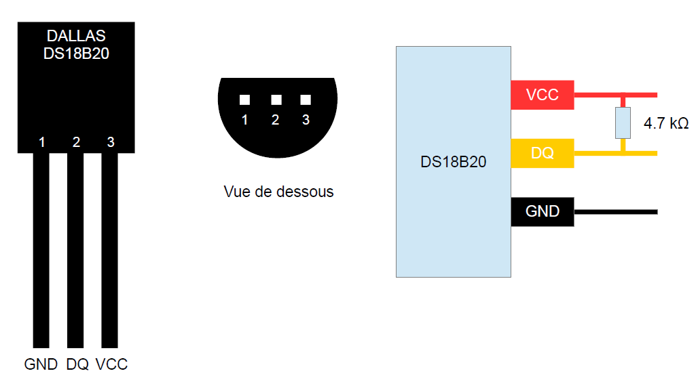
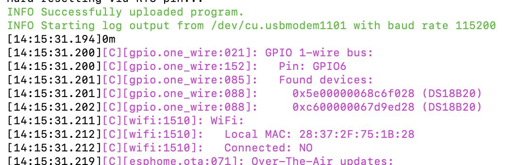
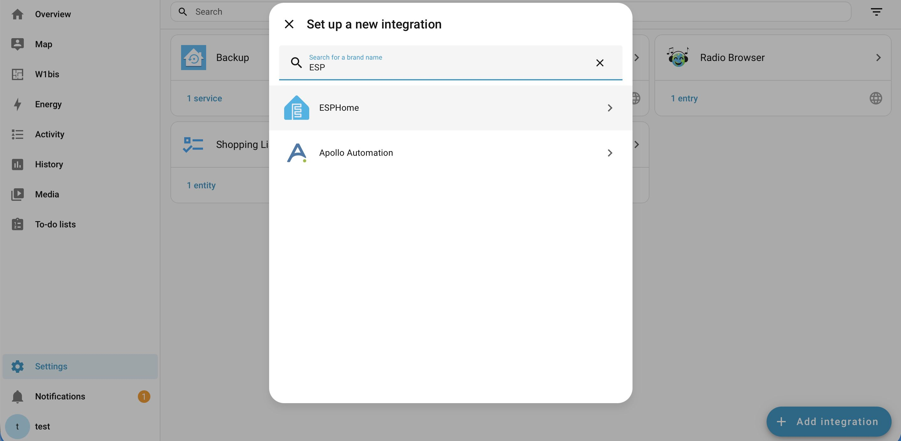
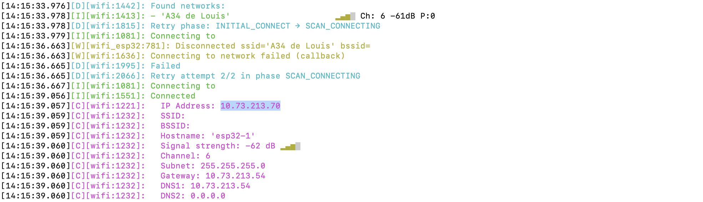

GPIO
Le fichier debug.yaml sert à afficher les adresses des capteurs lorsque l'on en branche plusieurs sur un esp32. Pour lancer le fichier entrez la commande suivante :
esphome run debug.yaml
Plusieurs méthodes sont possibles pour intégrer des capteurs. Soit on relie directement les capteurs en filaire au Raspberry Pi, soit on utilise une communication sans fil via un ESP32. Dans cette section, les deux approches seront abordées. À noter qu’il existe d’autres solutions, mais nous présentons ici celles utilisées dans notre projet.
Tout d’abord, les deux méthodes nécessitent un branchement similaire du capteur, basé sur une connexion 1-Wire.

Branchement du capteur 1-Wire
Connexion au Raspberry Pi / ESP32 :
Intérêt de OWServer :
OWServer permet de centraliser l'accès aux capteurs One-Wire. Il agit comme un serveur qui expose les capteurs (température, humidité, etc.) via le réseau ou en local. Cela permet à plusieurs applications ou machines d'accéder aux capteurs sans connexion directe au bus 1-Wire.
Installation d’OWServer :
Configuration :
Ajouter ou modifier les lignes suivantes :
Redémarrer le serveur :
Vérifier que le service fonctionne :
Modifier ensuite le fichier de configuration :
Ajouter la ligne suivante à la fin du fichier :
Lister les capteurs détectés :
Dans Home Assistant :
Cliquer sur Ajouter un pont puis entrer :
Flash en 3 étapes :
1. debug.yaml → détecter les capteurs
2. récupérer les adresses
3. config.yaml → config finale
Le fichier debug.yaml sert à afficher les adresses des capteurs lorsque l'on en branche plusieurs sur un esp32. Pour lancer le fichier entrez la commande suivante :
Commande de flash :
Une fois la commande exécutée, choisissez le mode de téléversement :
👉 USB recommandé (surtout lors du premier flash)
Ensuite, observez les logs pour récupérer les adresses des capteurs DS18B20.

Exemple de logs d’un ESP32 connecté à deux capteurs sur le GPIO6.
Adresses détectées :
0x5e00000068c6f028
0xc600000067d9ed28
Il est nécessaire de flasher votre ESP32 avant de pouvoir l’ajouter à Home Assistant.

Ajout d'une nouvelle intégration
Recherchez et sélectionnez ESPHome. Entrez ensuite l’adresse IP de l’ESP32.

Recherche de l'IP dans les logs